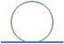
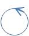

Jacobson [JCJO92] propone una metodologia di costruzione
dell'architettura di un sistema basata sulla
partizione sistematica degli
use cases in oggetti di tre categorie, ottenute
articolando lo spazio concettuale in tre dimensioni:
informazione,
presentazione e
controllo.
A ciascuna di queste dimensioni corrisponde una specifica classe di oggetti,
ciascuna rappresentata da uno stereotipo, cui corrisponde
una specifica icona, ora adottata anche nel
Rational Unified Process (
RUP).
|
Figure 1. Informazione

|
Entity
E' la dimensione relativa alle entità
del sistema cui corrisponde l'insieme degli oggetti che includono
funzionalità relative alle informazioni che caratterizzano il sistema; questi oggetti
sono denominati oggetti entità e costituiscono
gran parte del modello del dominio
(si veda Analisi dei requisiti).
|
|
Figure 2. Presentazione
|
Boundary
E' la dimensione relativa alle funzionalità che dipendono dall'ambiente esterno
cui corrisponde l'insieme degli oggetti che incapsulano l'interfaccia
del sistema verso il mondo esterno;
questi oggetti sono denominati oggetti interfaccia.
|
|
Figure 3. Controllo

|
Control
E' la dimensione relativa agli enti che incapsulano il controllo
cui corrisponde l'insieme degli oggetti includono funzionalità non incapsulabili
negli oggetti delle categorie precedenti.
Il loro compito, tipicamente,
è di fare da collante tra gli oggetti interfaccia e gli oggetti entità;
questi oggetti sono denominati oggetti controllo.
|
La proposta di impostare l'architettura di un sistema software
distinguendo tra
boundary objects,
control objects
ed
entity objects
costituisce un solido punto di partenza anche per il disegno dell'architettura
logica di molte applicazioni.
Infatti l'analista tende ad affrontare la complessità dei problemi partizionando
i problemi stessi in sotto-problemi;
è quindi del tutto logico che un analista eviti di associare alle entità di un dominio
sia le funzionalità di una specifica applicazione sia le funzionlaià
tipiche della interazione con l'utente.
Ne consegue un classico approccio all'analisi rappresentatabile in
UML,
da un diagramma come quello che segue:
La conseguenza è che l'architettura di un sistema software
risulta quasi fisiologicamente articolata in una
sequenza di livelli (
layer) verticali che viene mantenuta
anche in fase di progetto e realizzazione.
A questa articolazione verticale si accompagna spesso una
articolazione in layer orizzontali tipica delle piatatforme
(si veda Piattaforme operative).